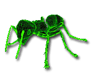
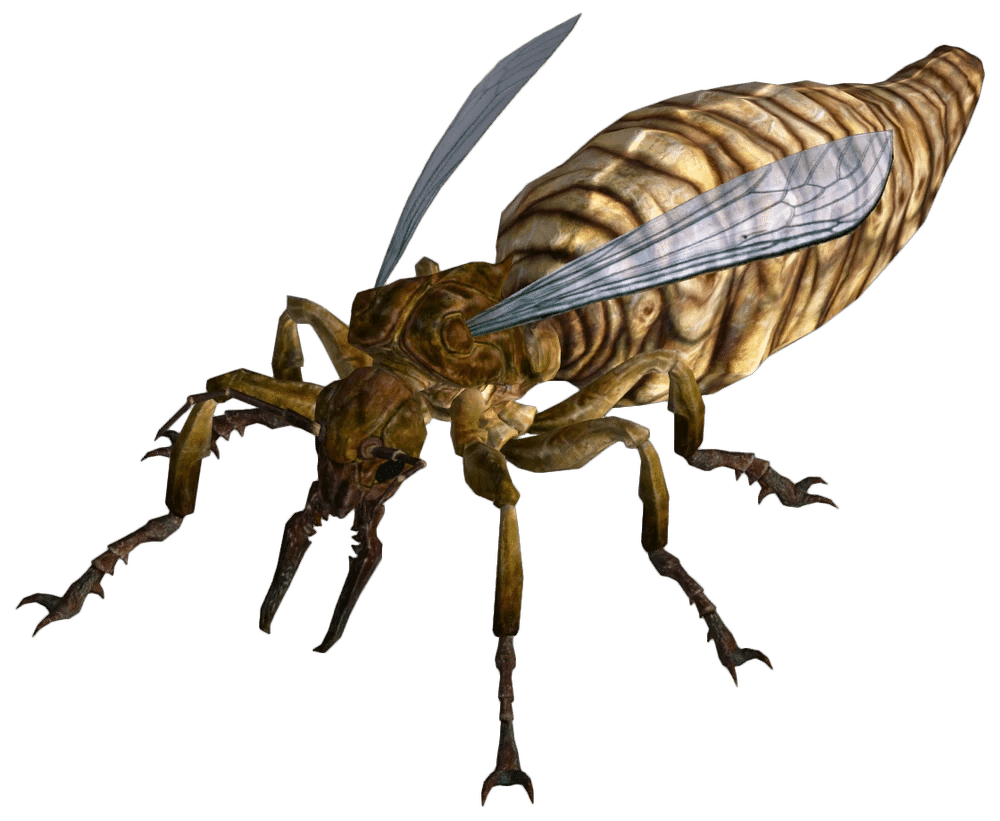
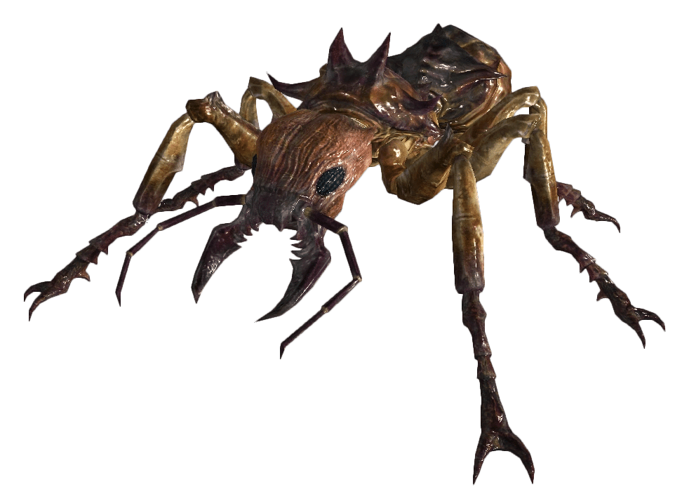
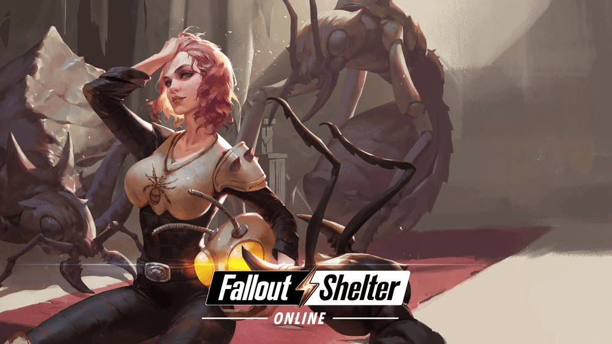

アリ
Fallout 2、Fallout 3、Fallout: New Vegas、Fallout 4 のNuka-Worldアドオン、Fallout 76、Fallout Shelter、Fallout: Wasteland Warfare
アリは、旧カリフォルニア州、キャピタル・ウェイストランド、モハーベ・ウェイストランド、コモンウェルス、アパラチアなどのウェイストランドでよく見られる敵対的な生物です。
背景
これらの変異した節足動物は膜翅目アリ科オオアリ属に属し、高レベルの放射線にさらされ、体が大きく成長しました。
変種
アリ
Fallout4:Nuka-World、Fallout 76
大小さまざまな採餌アリがコロニーの大部分を占め、兵隊アリがコロニーを守って防御しています。
飛行能力を持つ小型の群れも存在し、まるで集団意識のように協調して行動します。
アリ自体は深刻な脅威ではなく、縄張りを侵略してプレイヤーキャラクターに群がってくる場合にのみ危険となります。
巨大アリ

Fallout 2、Fallout 3
巨大アリは、かつて北カリフォルニアとオレゴンと呼ばれていた地域に生息する大型の昆虫類で、洞窟などの暗い場所に生息する傾向があり、アロヨやブロークンヒルズで見られる。
昆虫であるため、3対の脚と強力な外骨格を持つ。また、主要な感覚器官である触角が損傷すると、凶暴化する傾向がある。
巨大アリの女王

Fallout 3、Fallout: New Vegas
群れの中核を成す巨大アリの女王は、無人アリや兵隊アリよりもはるかに大きく、攻撃者に向かって酸を吐き出す能力を持つ。
しかし、その巨体ゆえにほとんど動けず、羽は退化した肢に過ぎず、威嚇行動はできるものの、それ以上の行動はできない。
女王は平均的な巨大アリの4～5倍の大きさである。
危険にさらされると、羽をブンブンと鳴らし、敵に向かってシューという音を立てる。
そして、敵を追い払うために酸性の唾液を吐き出す。
女王はほとんど動けないため、特に狭い空間では容易に回避できる。
巨大な兵隊アリ

Fallout 3、Fallout: New Vegas
これらは侵入者に対するコロニーの主な防御手段です。
数が多く、敵を追い払ったり殺したりすることで圧倒することができます。このアリは、小さなアリと一緒に餌を探している姿をよく見かけます。
巨大働きアリ
Fallout 3、Fallout: New Vegas
名前が示すように、これらのアリはコロニーの周りのほとんどの作業を行います。
侵入アリ
Fallout 3
そのうちの 2 匹は、シェールブリッジのトンネル内で変異した採餌アリを攻撃しているところを見られる可能性があります。
変異した採餌アリ
Fallout 3
彼らは友好的で、攻撃されても攻撃しません。
🐜は割と昆虫ですが大丈夫ですね。
特にFallout76の🐜は他の昆虫と違ってわめき散らかしたりしないので楽です。
なんか最初の頃は🐜の肉を集めてたんですけどなんでしたっけね・・・。
多分初心者の頃は役立つアイテムが蟻の肉から作れるんじゃないかなぁ・・・。
もう草食動物なので味しなくなっちゃいましたが。

コミュニティ維持のため、寄付を受け付けております。
> COMMENTS